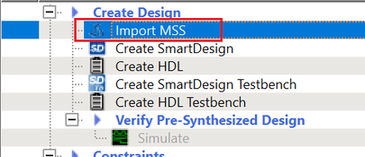

18.2.4 Generating, Importing, and Exporting the MSS Component
(Ask a Question)The following sections describe the steps for generating, importing, and exporting the MSS component.
18.2.4.1 Generating the MSS Component and Report
(Ask a Question)The configuration file (module_name.xml) required for the firmware project and the configuration report file (module_name.html) are also generated at this time.
INFO: Successfully generated MSS configuration report to 'C:/Microsemi/PFSOC_MSS_Configuration\PFSOC_MSS_C0_Report.html'INFO: Successfully generated MSS component file to 'C:/Microsemi/PFSOC_MSS_Configuration/PFSOC_MSS_C0.cxz'The report file (module_name.html) consists of following sections:
- Design Information – This section consists of design parameters like device family name, die, package, configurator version, and the date the report was generated.
- FPGA Fabric – This section mentions whether FPGA Fabric programming is required or not.
- Fabric Interface Controllers – Consists information about status of the interface controllers.
- Peripherals – Contains information about which peripherals are being used or unused.
- DDR Memory – Shows the memory type.
- List of Ports – Depicts information about all the ports with direction.
- I/O REFCLK Port Settings – Shows all the information about Reference clock ports.
- MSSIO Port Settings – Shows all the information about MSSIO ports.
- DDRIO Port Settings – Shows all the information about DDRIO ports.
- SGMII I/O Port Settings – Shows all the information about SGMII ports.
18.2.4.2 Importing the MSS CXZ File to Libero SoC
(Ask a Question)PFSOC_MSS_C0.cxz file:- Use the Import
MSS option shown in the following figure.
Figure 18-51. Import MSS to Libero  - From Design Hierarchy, drag the MSS component to SmartDesign canvas.
- Build the hierarchy.
MSS CXZ file must be re-imported and used in Libero
SmartDesign.18.2.4.3 Importing the MSS XML File to SoftConsole
(Ask a Question)<$Directory>:/Microsemi/PFSOC_MSS_Configuration/PFSOC_MSS_C0_mss_cfg.xml<$Installation Directory>:\Microchip\<$SoftConsole_Workspace>\Project_Name\src\platform\config\xmlNote: This step can also be performed using the Import option from SoftConsole.
18.2.4.4 Exporting the FPGA Design Hardware Platform Information
(Ask a Question)- Fabric blocks like LSRAM, DMA Controller, and PCIe are connected to the AXI interconnect IP on the Fabric side. MSS communicates with these fabric blocks via Fabric Interface Controllers, which connects to the AXI Interconnect IP. The memory addresses of these fabric blocks are specified in the AXI Interconnect IP Configurator. These memory addresses must be specified in the software application.
- In the Libero SoC design, the user must drive the required MSS interrupt ports and other interrupts can be grounded. The corresponding Interrupt Request (IRQ) handler routines must be invoked in the software application for interrupt handling.
Libero SoC tool does not export the FPGA fabric peripheral memory map, interrupt mapping, or peripheral clock frequencies. Therefore, add this information manually in your embedded software projects. For example, if fabric blocks such as LSRAM and DMA Controller are used in the design and interfaced with the MSS through a FIC, then the memory addresses of these fabric blocks must be specified in the user application code for accessing them from MSS.